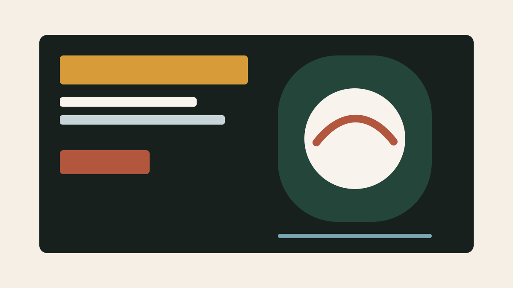

Website rebuild
Home of the Hangover
Reframed a bottle shop and bar site around clearer navigation, stronger editorial voice, and a mobile path that makes the place feel easy to discover.
- Tools
- Figma, AI prototyping, analytics
- Outcome
- Sharper story, faster browsing, easier updates